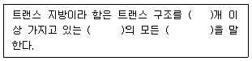

식품산업기사 (2015-05-31 기출문제)
1과목: 식품위생학
1. 식품의 방사능 오염에서 가장 문제가 되는 핵종끼리 짝지어진 것은?
- 60Co, 89Sr
- 55Fe, 134Cs
- 59Fe, 141Ce
- 137Cs, 131I
(정답률: 83%)

2. 식품첨가물 공전의 총칙과 관련된 설명으로 틀린 것은?
- 중량백분율을 표시할 때는 %의 기호를 쓴다.
- 중량백만분율을 표시할 때는 ppb의 기호를 쓴다.
- 용액 100mL 중의 물질 함량(g)을 표시할 때에는 w/v%의 기호를 쓴다.
- 용액 100ml 중의 물질 함량(ml)을 표시할 때에는 v/v%의 기호를 쓴다.
(정답률: 70%)
3. 다음 중 허용된 감미료가 아닌 것은?
- 사가린나트륨(sodium saccharin)
- 아스파탐(aspartame)
- D-소르비톨(D-sorbitol)
- 둘신(dulcin)
(정답률: 84%)
4. 다음은 식품 등의 표시 기준에서 트랜스지방의 정의에 대한 설명이다. ( )안에 들어갈 용어를 순서대로 나열한 것은?

- 2 – 공액형 - 포화지방산
- 1 – 공액형 - 불포화지방산
- 2 – 공액형 – 불포화지방산
- 1 – 비공액형 - 불포화지방산
(정답률: 80%)
5. 마이코톡신(mycotoxin)에 대한 설명으로 틀린 것은?
- 비단백성의 저분자 화합물로서 항원성을 가진다.
- 열에 강하여 조리나 가공 중에 분해·파괴되지 않는다.
- 독성이 강하고 발암성 등이 있어 인체에 치명적이다.
- 곰팡이 대사산물이다.
(정답률: 59%)
6. LD50의 의미로 옳은 것은?
- 실험동물의 50%를 사망시키는 데 필요한 최소 투여량
- 실험동물의 최소 50마리를 사용하는 실험
- 실험동물의 수명을 50% 이하로 단축하는 데 요하는 투여량
- 실험동물에 치사량이 50%를 투입하는 실험
(정답률: 85%)
7. 식품공업에 있어서 폐수의 오염도를 판명하는데 필요치 않은 것은?
- DO
- BOD
- WOD
- COD
(정답률: 87%)
8. 식품 중 효모의 발육이 가능한 최저 수분활성도(Aw)로 가장 적합한 것은?
- 1
- 0.88
- 0.60
- 0.55
(정답률: 76%)
9. 간디스토마(간흡충)는 제2 중간숙주인 민물고기 내에서 어떤 형태로 존재하다가 인체에 감염을 일으키는가?
- 유모유충(miracidium)
- 레디마(redia)
- 유미유충(cercaria)
- 피낭유충(metacercaria)
(정답률: 85%)
10. 독소형 식중독을 일으키는 것은?
- Clostridium botulinum
- Listeria monocytogenes
- Streptococcus faecalis
- Salmonella typhi
(정답률: 82%)
11. 햄, 소시지 등 훈제품에서 주로 발견될 수 있는 발암성 물질은?
- trans 불포화지방산
- benzopyrene
- carmine
- trichloroethylene
(정답률: 86%)
12. 장염비브리오균(Vibrio parahaemolyticus)의 분리에 주로 사용하는 배양기는?
- SS 한천 배지
- TCBS 한천 배지
- Zeissler 한천 배지
- Nutrient 한천 배지
(정답률: 80%)
13. 이타이이타이병과 관련이 깊은 중금속은?
- 카드뮴(Cd)
- 구리(Cu)
- 납(Pb)
- 수은(Hg)
(정답률: 82%)
14. 음식을 섭취한 임신부가 패혈증이 발생하고 자연유산을 하였다. 식중독 유발 균주를 확인한 결과 식염 6%에서 성장 가능하고 catalase 양성이었다. 이 식품에 오염된 균은?
- Yersinis enterocolitica
- Campylobacter jejuni
- Listeria monocytogenes
- Escherichia coli O157:H7
(정답률: 69%)
15. 다음 원인물질과 중독성분에 대해 잘못 연결되어 있는 것은?
- 감자 - solanine
- 복어 - tetrodotoxin
- 독미나리 - cicutoxin
- 패류 - muscarine
(정답률: 89%)
16. 민물의 게 또는 가재가 제2 중간숙주인 기생충은?
- 폐흡충
- 무구조충
- 요충
- 요코가와흡충
(정답률: 88%)
17. 진드기류의 번식 억제 방법이 아닌 것은?
- 밀봉 포장에 의한 방법
- 습도를 줄이는 방법
- 냉장하는 방법
- 30℃ 정도로 가열하는 방법
(정답률: 76%)
18. 장출혈성 대장균 감염증에 대한 설명 중 틀린 것은?
- Escherichia coli O157:H7이 주요 원인균이다.
- 원인식품은 초고온멸균(UHT) 우유이다.
- 법정감염병 제1군에 속한다.
- 부적절하게 살균소독제 기구 등으로 인하여 사람에게 전파되기 쉽다.
(정답률: 73%)
19. 치즈나 마가린에 사용이 가능한 첨가물은?
- 식용색소 황색 제5호
- 식용색소 적색 제2호
- 베타 카로틴
- 식용색소 황색 제4호
(정답률: 61%)
20. 생물체에서 정상적으로 생성·분비되는 물질이 아니라 인간의 산업활동을 통해서 생성·방출된 화학물질로, 생물체에 흡소되면 내분비계의 정상적인 기능을 방해하거나 혼란케 하는 내분비 교란물질은?
- 잔류우기 오염 물질
- 방사선 오염 물질
- 환경독소
- 환경호르몬
(정답률: 80%)
2과목: 식품화학
21. 과채류 가공 시 불포화지방산의 산패(rancidity)를 촉진하지 않는 것은?
- BHT(butylated hydroxytoluene)
- 지질 산소화효소(lipoxygenase)
- 빛
- 전이금속
(정답률: 66%)
22. 에르고스테롤(ergosterol)에 자외선을 쪼였을 때 생성되는 것은?
- A
- B1
- C
- D2
(정답률: 72%)
23. 과일의 성숙기 및 보관 중 발생하는 연화(softening) 과정에서 가장 많은 변화가 일어나는 세포벽 구성물은?
- cellulose
- hemicellulose
- pectin
- lignin
(정답률: 80%)
24. 고분자 화합물인 단백질과 관련이 없는 실험방법은?
- 원심분리
- 젤 크로마토그래피(gel chromatography)
- SDS 젤 전기영동
- 동결건조
(정답률: 71%)
25. 튀김과 같이 유지를 고온에서 오랜 시간 가열하였을 때 나타나는 반응과 거리가 먼 것은?
- 비누화 반응
- 열분해 반응
- 산화 반응
- 중합 반응
(정답률: 78%)
26. 대두에 많이 함유되어 있는 기능성 물질은?
- 라이코펜(lycopene)
- 아이소플라본(isoflavone)
- 카로티노이드(carotenoid)
- 세사몰(sesamol)
(정답률: 77%)
27. 식품을 가열할 때 당이 공존하면 아미노산의 손실이 큰 주된 이유는?
- 마이야르(maillard) 반응이 일어나기 때문이다.
- 아미노산의 파괴를 촉진하기 때문이다.
- 단백질이 변질되기 때문이다.
- 탈수가 일어나기 때문이다.
(정답률: 73%)
28. 천연 단백질은 대부분 어떤 형태로 구성되어 있는가?
- α-아미노산
- ß-아미노산
- γ-아미노산
- δ-아미노산
(정답률: 64%)
29. 수박, 토마토의 붉은색을 나타내는 대표적인 색소는?
- ß-carotene
- lutein
- zeaxanthin
- lycopene
(정답률: 80%)
30. 고추의 매운맛 성분은?
- 시니그린(sinigrin)
- 쿠르쿠민(curcumine)
- 캡사이신(capsaicin)
- 캔산틴(capsanthin)
(정답률: 90%)
31. 관능 검사에서 신제품이나 품질이 개선된 제품의 특성을 묘사하는 데 참여하며 보통 고도의 훈련과 전문성을 겸비한 요원으로 구성된 패널은?
- 차이 식별 패널
- 특성 묘사 패널
- 기호 조사 패널
- 전문 패널
(정답률: 78%)
32. 기초 대사량을 측정할 때의 조건으로 적합하지 않은 것은?
- 영양상태가 좋을 때 측정할 것
- 완전휴식 상태일 때 측정할 것
- 적당한 식사 직후에 측정할 것
- 실온 20℃ 정도에서 측정할 것
(정답률: 85%)
33. 소성체의 특성을 나타내는 식품은?
- 가당연유
- 생크림
- 물엿
- 난백
(정답률: 82%)
34. 식품의 레올로지 특성 중 유체에 있어서 흐름에 대한 저항을 무엇이라 하는가?
- 점성
- 탄성
- 소성
- 점탄성
(정답률: 67%)
35. 감미도가 강한 순서대로 맞게 배열된 것은?
- 사카린 > 아스파탐 > 글리시리진 > 스테비오사이드
- 사카린 > 스테비오사이드 > 아스파탐 > 글리시리진
- 사카린 > 스테비오사이드 > 글리시리진 > 아스파탐
- 사카린 > 글리시리진 > 아스파탐 > 스테비오사이드
(정답률: 57%)
36. 과채류의 품질을 결정하는 요인 중의 하나인 조직(texture)에 가장 영향을 미치는 무기질은?
- calcium
- potassium
- magnesium
- iron
(정답률: 59%)
37. 다음 중 젤 상태의 식품이 아닌 것은?
- 된장국
- 묵
- 젤리
- 양갱
(정답률: 90%)
38. 어류 비린내의 주성분은?
- 테르펜
- 아민
- 황화합물
- 피라진
(정답률: 77%)
39. 90% 황산 용액의 농도를 30%로 변경하고자 할 때 황산과 물의 혼합비율은?
- 1 : 1
- 1 : 2
- 1 : 3
- 2 : 1
(정답률: 62%)
40. 항산화제로 작용하는 저분자 펩티드(peptide)인 글루타티온(glutathione)을 구성하는 아미노산이 아닌 것은?
- arginine
- cysteine
- glutamic acid
- glycine
(정답률: 41%)
3과목: 식품가공학
41. 산도가 0.3%인 크림 500kg을 0.2%의 산도가 되도록 젖산으로 중화하고자 할 때, 사용하여야 할 젖산의 양은?
- 450g
- 500g
- 550g
- 600g
(정답률: 59%)
42. 두부 제조에서 두부의 응고 정도에 영향을 크게 주지 않는 것은?
- 응고제의 색
- 응고 온도
- 응고제의 종류
- 응고제의 양
(정답률: 88%)
43. 콩단백질의 주성분이며 두부 제조 시 묽은 염류 용액에 의해 응고되는 성질을 이용하는 물질은?
- 알부민(albumin)
- 글리시닌(glycinin)
- 제인(zein)
- 락토글로불린(lactoglobulin)
(정답률: 74%)
44. 수산물 통조림 제조 공정에 대한 설명으로 틀린 것은?
- 혐기성균인 클로스트리디움보툴리늄(Clostridium botulinum)의 발육한계점인 pH6.0 이상의 수산물 통조림은 저온살균을 해야 한다.
- 통조림은 살균 후 조직의 연화, 황화 수소 생성, 호열성 세균의 발육 등을 억제하기 위하여 급속냉각한다.
- 통조림 공정 중 밀봉 전에 품질 저하방지, 관 내부 부식 방지, 호기성 미생물 발육 억제, 변패관 식별 등을 위하여 탈기한다.
- 통조림에 묽은 식염수, 조미액, 기름 등을 넣으면 살균효과가 상승하고, 어체의 관벽 부착과 고형물 파손 등을 방지할 수 있다.
(정답률: 55%)
45. 젤리화에 가장 적합한 유기산의 함량은?
- 0.01%
- 0.03%
- 0.3%
- 3%
(정답률: 64%)
46. 수산가공품의 종류가 잘못 연결된 것은?
- 염장품- 굴비
- 동건품 – 마른 명태(황태)
- 연제품 – 판붙이 어묵, 부들 어묵, 제맛 어묵
- 해조 가공품 – 알긴산, 카라기난
(정답률: 60%)
47. 마요네즈의 식품공전상 식품 구분은?
- 조미식품
- 드레싱류
- 식용유지류
- 식육 또는 알가공품
(정답률: 64%)
48. 유가공품의 살균 또는 멸균 공정에 대한 설명으로 틀린 것은?
- 저온 장시간 살균법은 63~65℃, 30분간 실시한다.
- 고온 단시간 살균법은 72~75℃, 15~20초간 실시한다.
- 살균제품에 있어서는 살균 후 즉시 4℃ 이하로 냉각하여야 한다.
- 멸균제품은 멸균한 용기 또는 포장에 무균 공정으로 충전·포장하여야 한다.
(정답률: 74%)
49. 용출(rendering)에 의한 유지 제조에 가장 적합한 것은?
- 참깨
- 대두
- 돈지
- 쇼트닝
(정답률: 66%)
50. 햄과 베이컨의 제조 공정에서 간먹이기에 사용되는 일반적인 제료가 아닌 것은?
- 소금
- 식초
- 설탕
- 조미료
(정답률: 81%)
51. 유리와 비슷한 투명도를 가지며 용기 채 가열한 후 먹을 수 있는 트레이 식품이나 생수용 물통, 보일-인-백(boil-in-bag)으로 사용될 수 있는 포장 재질은?
- 폴리스티렌(polystyrene)
- 폴리에틸렌 테레프탈레이트(polyethylene terephthalate)
- 폴리카보네이트(polycarbonates)
- 폴리염화비닐(polyvinyl chloride)
(정답률: 50%)
52. 고형분이 10%인 오렌지 주스 100kg을 농축시켜 20%의 고형분이 함유되어 있는 주스로 만들기 위해서는 수분을 얼마나 증발시켜야 되는가?
- 20kg
- 40kg
- 50kg
- 60kg
(정답률: 61%)
53. 콜라겐(collagen)에 대한 설명으로 틀린 것은?
- 섬유상 구조단백질이다.
- 인장 강도가 강하다.
- 변성되면 젤라틴(gelatin)이 된다.
- 지방 분해효소로 분해된다.
(정답률: 61%)
54. 식품유형 중 잼에 대한 설명으로 옳은 것은?
- 과즙을 농축한 액상의 것
- 과육 전체 또는 과육편을 원료로 하여 그 원형을 유지시킨 제품
- 과일을 원료로 한 것으로 과피가 함유된 것
- 과일류 또는 채소류를 당류 등과 함께 젤리화한 것
(정답률: 71%)
55. 필름 제조 시 열로 미리 연신시켜 냉각시킨 필름을 가열 포장 시 재가열에 의해 연신된 필름이 원래의 위치로 돌아가는 성질을 이용한 것으로 모양이 일정하지 않은 것, 케이스를 사용하지 않고 단위 포장을 하는 데 많이 이용되는 포장법은?
- 수축 포장(shrink wrapping)
- 블리스터 포장(blister packaging)
- 스킨 포장(skin packaging)
- 폼-필-실(form-fill-seal)
(정답률: 53%)
56. 면역 능력에 도움을 주는 건강기능식품의 고시형 원료가 아닌 것은?
- 표고버섯균사체
- 인삼
- 홍삼
- 알로에겔
(정답률: 66%)
57. 식용유지와 지방질 식품에 사용할 수 있는 합성 항산화제의 조건으로 적합하지 않은 것은?
- 독성이 없거나 매우 약해야 한다.
- 저농도(0.01~0.001%)에서 유효해야 한다.
- 첨가될 식품에 이미, 이취 등을 주어서는 안 된다.
- 유지에 녹으면 안 된다.
(정답률: 67%)
58. 우유류의 성분규격이 아닌 것은?
- 유지방(%)
- 비중(15℃)
- 무지유고형분(%)
- 점도(15℃)
(정답률: 66%)
59. 대두로부터 단백질을 효율적으로 추출하여 수율을 높이려면 어떤 pH에서 추출하는 것이 가장 적합한가?
- pH 3.5
- pH 4~4.5
- pH 6
- pH 8~9
(정답률: 47%)
60. 건조 과실 및 채소의 제조와 관계가 없는 것은?
- H2SO
- H3PO4
- NaOH
- blanching
(정답률: 50%)
4과목: 식품미생물학
61. 통조림의 살균 부족으로 잔존하기 쉬운 독소형 세균은?
- Streptococcus faecalis
- lostridium botulinum
- Bacillus subtilis
- Lactobacillus casei
(정답률: 71%)
62. 다음 중 무성포자(asexual spore)인 것은?
- 난포자(oospore)
- 자낭포자(ascospore)
- 접합포자(zygospore)
- 후막포자(chlamydospore)
(정답률: 51%)
63. 곰팡이에 의한 달걀의 변패 중 곰팡이의 생육 초기에 점상 반점(pin-spot molding)이 껍질의 표면 또는 바로 안쪽에 나타날 때, 곰팡이의 종류와 점상 반점의 색깔 연결이 틀린 것은?
- Cladosporium속 – 암녹색, 흑색 반점
- Penicillium속 – 황색, 청색, 초록색 반점
- Proteus속 – 적색 반점
- Sporotrichum속 – 분홍색 반점
(정답률: 54%)
64. 버섯의 구조 중 담자포자가 위차하는 곳은?
- 갓 외피막
- 주름
- 자루
- 각포
(정답률: 63%)
65. 포도주 발효에 가장 많이 사용되는 효모는?
- Saccharomyces sake
- Saccharomyces coreanus
- Saccharomyces ellipsoideus
- Saccharomyces carlsbergensis
(정답률: 78%)
66. 저장 중인 사과, 배의 연부현상을 일으키는 것은?
- Penicillium notatum
- Penicillium expansum
- Penicillium cyclopium
- Penicillium chrysogenum
(정답률: 78%)
67. 미생물의 증식도를 측정하는 방법으로 부적합한 것은?
- 건조 균체량 측정
- pH 측정
- 균체 질소량 측정
- 총균수 측정
(정답률: 58%)
68. 장류 제조 시 코지(koji)균으로 요구되는 조건이 아닌 것은?
- 프로테아제(protease) 및 아밀라아제(amylase) 효소 활성이 강해야 한다.
- 포자를 형성하지 않아야 한다.
- 제국이 용이해야 한다.
- 장류의 향과 맛이 좋아야 한다.
(정답률: 67%)
69. gluconic acid를 생산하는 미생물과 거리가 먼 것은?
- Acetobacter gluconicum
- Pseudomonas fluorescens
- Penicillium notatum
- Lactobacillus bulgaricus
(정답률: 52%)
70. 토양이나 식품에서 자주 발견되고 aflatoxin이라는 발암성 물질을 생성하는 유해 곰팡이는?
- Aspergillus flavus
- Aspergillus niger
- Aspergillus oryzae
- Aspergillus sojae
(정답률: 77%)
71. 효소에 대한 설명 중 틀린 것은?
- 효소는 특정물질에만 작용하는 기질특이성이 있다.
- 효소의 작용은 pH에 크게 영향을 받는다.
- 온도가 높아질수록 효소활성도는 계속 커진다.
- 유기화합물의 반응에서 축매 역할을 한다.
(정답률: 75%)
72. 초산 발효 중에 생성된 초산을 다시 물과 이산화탄소로 산화(과산화)하는 식초 양조의 유해균으로 작용하는 초산균은?
- Acetobacter aceti
- Acetobacter vini acetati
- Acetobacter oxydans
- Acetobacter xylinum
(정답률: 44%)
73. 치즈 표면에 착생하여 치즈의 변색과 불쾌취를 발생시키는 곰팡이가 아닌 것은?
- Geotrichum속
- Cladosporium속
- Fusarium속
- Penicillium속
(정답률: 56%)
74. 폐수의 BOD를 저하시킬 수 있는 발효법은?
- Urises deMell법
- Hildebrandt-Erb법
- 고동도 술덧 발효법
- 연속 발효법
(정답률: 66%)
75. 청주 종국 제조 시 나무재(木)의 사용 목적이 아닌 것은?
- 강알칼리성으로 잡균 침입을 방지한다.
- 수분을 조절한다.
- 포자형성을 양호하게 한다.
- 국균에 칼륨을 공급한다.
(정답률: 51%)
76. 빵의 로프(rope) 발생 원인이 되는 미생물은?
- Serratia marcescens
- Penicillium expansum
- Bacillus licheniformis
- Lactobacillus lactis
(정답률: 47%)
77. 미생물을 액체배양기에서 배양하였을 경우 증식곡선의 순서는?
- 유도기 → 감퇴기(사멸기) → 대수증식기 → 정상기
- 정상기 → 대수증식기 → 유도기 → 감퇴기(사멸기)
- 정상기 → 대수증식기 → 감퇴기(사멸기) → 유도기
- 유도기 → 대수증식기 → 정상기 → 감퇴기(사멸기)
(정답률: 86%)
78. 탄소원으로 1kg의 에틸알코올을 배지로 하여 초산 발효하였을 때 얻어지는 초산의 이론적인 최대 생성량은 약 얼마인가?
- 667g
- 874g
- 1,304g
- 1,517g
(정답률: 70%)
79. 주정 발효 대사와 가장 관계 깊은 경로는?
- EMP
- HMP
- TCA
- ß-oxidation
(정답률: 73%)
80. 포자낭 포자, 포복지, 가근을 형성하는 곰팡이는?
- Mucor속
- Rhizopus속
- Aspergillus속
- penicillium속
(정답률: 78%)
5과목: 식품제조공정
81. 청과물 표면의 색도 차이를 이용하여 선별하는 방법은?
- 크기
- 광학
- 모양
- 무게
(정답률: 85%)
82. 다음 식품가공 공정 중 혼합 조작이 아닌 것은?
- 반죽
- 교반
- 유화
- 정선
(정답률: 82%)
83. 선별기에 대한 설명으로 틀린 것은?
- 크기 선별기에 해당되는 벨트 롤러 선별기는 벨트와 롤러 사이의 간격이 출구 쪽으로 갈수록 단계적으로 넓어지게 되어 있는 선별기로서 손상을 받기 쉬운 식품의 선별에 적합하다.
- 모양 선별기에 해당되는 원통분리기는 회전원통의 내부 표면에 흠이 있으며 약간 경사져 회전하는, 밀의 정선에 적합하다.
- 색 선별장치에는 반사 선별기, 투과 선별기 등이 있다.
- 길이 선별기는 크기 선별기 중 하나이며 오이와 같은 것을 진동급송기로 길이가 긴 쪽으로 배열되게 하여 이동시키면 긴 것은 막대를 넘어가나 짧은 것은 막대를 넘기 전에 아래로 떨어지게 하는 원리를 이용한다.
(정답률: 52%)
84. 막분리의 특징이 아닌 것은?
- 상의 변화가 있기 때문에 에너지가 절약된다.
- 가열을 하지 않기 때문에 향기 성분의 손실을 방지할 수 있다.
- 대량의 냉각수가 필요 없다.
- 분획과 정제를 동시에 행할 수 있다.
(정답률: 51%)
85. 고정된 통 안에 가늘고 긴 회전 원통을 설치하여 혼합물을 하부에서 공급하면 원심력에 의해 가벼운 액체는 안쪽에 층을 이루고 무거운 액체는 벽쪽으로 이동하여 분리시키는 기계는?
- 관형 원심분리기
- 원판형 원심분리기
- 컨베이어형 원심분리기
- 노즐형 원심분리기
(정답률: 75%)
86. 유지 제조과정 중 탈납(winterization) 공정에 대한 설명으로 틀린 것은?
- 액체유지는 서서히 냉각할 때 지질 경절을 생성하는 원리를 이용한다.
- 혼합유지로부터 유지성분들을 분별하는 데 이용할 수 있다.
- 저온 저장 시 유지를 혼탁하게 만드는 성분을 제거하는 방법으로 사용된다.
- 수소화 반응을 통해 액체불포화유지로부터 고체포화유지로 상변화를 유도하여 분리하는 방법이다.
(정답률: 49%)
87. 과립 성형 방법으로 제조되는 제품이 아닌 것은?
- 분말주스
- 빵 이스트
- 인스턴트 커피 분말
- 비스킷
(정답률: 81%)
88. 다음 중 나열된 건조기와 적용 가능한 해당식품 또는 건조 기능이 잘못 연결된 것은?
- 빈 건조기(bin dryer) - 마감 건조
- 분무 건조기(spray dryer) - 과일주스
- 기송식 건조기(pneumatic dryer) - 두유
- 유동층 건조기(fluidized bed dryer) - 설탕
(정답률: 63%)
89. 음이온 및 양이온 교환막을 이용하여 전위차에 의한 이온을 분리하는 방법은?
- 전기투석
- 역삼투
- 열삼투
- 투석
(정답률: 65%)
90. 다음 농축 공정 중 원료의 온도 변화가 가장 작은 공정은?
- 증발 농축
- 동결 농축
- 막 농축
- 감압 농축
(정답률: 68%)
91. 크고 무거운 식품 원료를 운반하는 데 주로 사용되는 고체이송기로 수직 방향 운반용의 양동이를 사용하는 것은?
- 체인 컨베이어
- 롤러 컨베이어
- 버킷 엘리베이터
- 스크로 컨베이어
(정답률: 76%)
92. 원료를 일정한 속도로 이동 중이거나 교반 중일 때 물을 뿌려 가면서 세척하는 방법은?
- 침지 세척
- 마찰 세척
- 분무 세척
- 부유 세척
(정답률: 80%)
93. 다음 중 에멀션의 형태가 나머지 셋과 다른 것은?
- 버터
- 마요네즈
- 두유
- 우유
(정답률: 80%)
94. 초고압 처리에 의해 생체 조직 내에서 일어날 수 있는 현상에 대한 설명으로 틀린 것은?(오류 신고가 접수된 문제입니다. 반드시 정답과 해설을 확인하시기 바랍니다.)
- DNA는 구조상 가장 낮은 압력 범위에서 파괴된다.
- 세포막 붕괴는 단백질의 변성 이전에 일어난다.
- 생체 내 2차 대사산물 중 저분자 물질은 고압 하에서도 파괴되지 않고 안정하다.
- 세포막 붕괴에 의해 세포내외의 물질 전달이 증가할 수 있다.
(정답률: 38%)
95. 회전자에 의해 강한 원심력을 받아 고정자와 회전자 사이의 극히 좁은 틈을 통과하여 유화시키는 유화기는?
- automizer
- vibration mill
- ring roller mill
- colloid mill
(정답률: 70%)
96. 일반적으로 과일, 채소, 종자들을 압착추출(expression)할 경우 압착과정의 효율에 영향을 미치는 요인이 아닌 것은?
- 원료의 압착에 대한 저항
- 분쇄된 조각의 다공성
- 추출 용매의 극성
- 적용된 압착력의 크기
(정답률: 54%)
97. 분무건조기(spray dryer)의 구성장치 중 열에 민감한 식품의 건조에 적합한 형태의 건조실은?
- 향류식(counter current flow type)
- 병류식(concurrent flow type)
- 혼합류식(mixed flow type)
- 평행류식(parallel flow type)
(정답률: 57%)
98. Bacillus stearothermophillus 포자를 열처리하여 생존균의 농도를 초기의 1/100,000만큼 감소시키는 데 110℃에서는 50분, 125℃에서는 5분이 각각 소요되었다. 이 균의 Z값은?
- 15℃
- 10℃
- 5℃
- 1℃
(정답률: 51%)
99. 살균온도는 121℃로 일정하고, 생균수가 103 일때의 살균시간이 2분. 102 일 때의 살균시간이 7분이라 한다면 D값은 얼마인가?
- 4
- 5
- 6
- 7
(정답률: 66%)
100. 기계의 가열된 표면에 직접 식품을 접촉시켜 건조하며, 점도가 큰 액체나 반죽 상태의 원료를 건조하는 데 적합한 장치는?
- 드럼 건조기
- 분무 건조기
- 터널 건조기
- 유동층 건조기
(정답률: 73%)